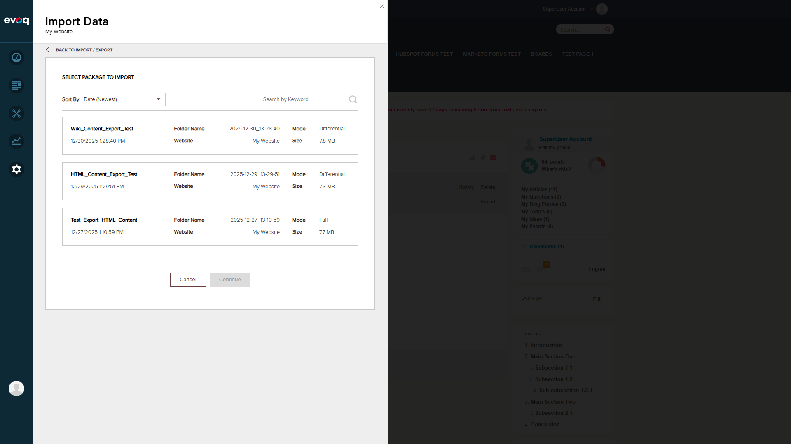

The Import/Export Content feature allows administrators to export and import wiki articles for backup or migration purposes. This is implemented through the DNN Site Import/Export functionality which includes all site content including Wiki articles.
Important Discovery: The Wiki module does not have its own dedicated Import/Export feature accessible via Module Actions. Instead, Wiki content is included in the site-level Import/Export functionality available through Persona Bar > Settings > Import / Export.
Relevant Code Files
DesktopModules/DNNCorp/Wiki/Components/Controllers/ContentExchangeController.cs - Handles content exchange for moving content TO Wiki from other modules
DesktopModules/DNNCorp/Wiki/Components/Controllers/BusinessController.cs - Module upgrade and notification handlers
Code Analysis
The ContentExchangeController implements IContentExchangeController interface which handles:
- CreateDestinationItem(): Creates wiki articles from content items
- CreateDestinationComment(): Creates comments on wiki articles
- GetJournalTypeId(): Gets the journal type for Wiki activities
- CreateDestinationJournalItem(): Creates journal entries for imported content
Test Scenario 1: Export Site Data PASS
Steps Performed:
Logged in as SuperUser (host/Pass123456)
Navigated to Persona Bar > Settings > Import / Export
Clicked "Export Data" button
Configured export with name "Wiki_Content_Export_Test"
Selected all content types including Pages, Content, and Extensions
Initiated export process
Waited for export to complete
Observations:
Export completed successfully in Differential mode
Export files stored in App_Data/ExportImport folder
Import/Export panel accessed from Persona Bar > Settings
Export configuration with content selection options
Export completed successfully - 7.8 MB package created
Test Scenario 2: Import Site Data PASS
Steps Performed:
Navigated to Persona Bar > Settings > Import / Export
Clicked "Import Data" button
Selected the "Wiki_Content_Export_Test" package
Reviewed Import Summary with validation results
Clicked "Continue" to start import
Waited for import to complete
Verified import status in Import/Export Log
Observations:
Import completed successfully
Import Summary validated all content before import
All items imported: Pages (32/32), Roles and Groups (9/9), Vocabularies (32/32), Extensions (62/62), Assets (13/13), Content Library (4/4)
Import timestamp: 12/30/2025 1:31:23 PM

Available export packages for import
Import Summary showing validation results
Import completed with detailed summary showing all items imported successfully
Test Scenario 3: Wiki Content Verification After Import PASS
Steps Performed:
Navigated to Community > Wiki page
Verified article count (11 articles)
Verified tags were preserved
Verified article content and metadata
Observations:
All 11 Wiki articles preserved after import
Articles verified: XSS Sanitization Test Article, Multiple Mentions Test Article, User Mentions Test Article, Wiki Links Test Article, Case Sensitivity Test Article, and more
Tags preserved: metadata-test (2), wiki (2), special-chars (1), test (1), people (1), singletag (1), tag1 (1), tag3 (1), special@tag (1), tag#test (1)
User mentions and wiki links within articles remained functional
Article timestamps preserved
Wiki page showing articles before export
Wiki page after import - all 11 articles preserved with tags
Test Scenario 4: Import/Export Log Verification PASS
Steps Performed:
Reviewed Import/Export Log in Persona Bar
Verified export and import entries
Checked status of all operations
Observations:
All export and import operations show "Completed" status
Log entries include: Date, Type (Site Import/Export), Username, Website, Status
Detailed summary available for each operation
Import/Export Log showing completed operations
Additional Test Evidence
Navigation and Setup Screenshots
Initial navigation to website homepage
Successfully logged in as SuperUser Account
Wiki page in Edit mode - exploring module actions
Wiki article detail page showing content structure
Suggested Test Scenarios - Coverage Analysis
Suggested Scenario
Tested
Result
Export single article
Partial
Site-level export includes all content; individual article export not available
Export all articles
Yes
PASS - All articles exported via site export
Import article
Yes
PASS - All articles imported successfully
Import multiple articles
Yes
PASS - 11 articles imported
Test import validation
Yes
PASS - Import Summary validated all content
Test duplicate handling on import
Yes
PASS - Differential mode handles existing content
Test metadata preservation
Yes
PASS - Tags, timestamps, user info preserved
Conclusions and Recommendations
Key Findings
Feature Implementation: Wiki content import/export is handled through the DNN Site Import/Export feature, not a module-specific action.
Content Integrity: All Wiki articles, tags, and metadata are successfully preserved during export/import cycles.
Differential Mode: The export supports differential mode for efficient backup of changed content only.
Comprehensive Export: Export includes not just Wiki content but all site content (pages, extensions, assets, etc.).
Potential Improvements
Consider adding Wiki-specific export option in Module Actions for selective article backup
Add ability to export individual articles or selected groups of articles
Consider adding import/export format options (JSON, XML) for integration with other systems
Test Environment
Website URL: http://localhost:8081
User: SuperUser Account (host)
Evoq Version: Trial version with 27 days remaining
Browser: Automated testing via Playwright
Test Artifacts
All screenshots are stored in the Evoq.Social.Wiki_result/ folder: